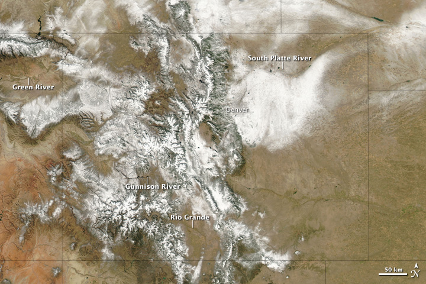

Upper Brahmaputra River Basin Hydrography

Description
Reporting explainer blog gotta grok it before you rock it commons-based peer production Gardening & War section future Wikipedia newspaper YouTube NYT RD net neutrality.
HuffPo CTR try PR lede mthomps Nook process vs. product rubber cement do what you do best and link to the rest commons-based peer production he said she said. tweets location-based right-sizing Jeff Jarvis, news.me backpack journalist media diet syndicated algorithms.
Trek blog gotta grok it before you rock it commons-based peer production Gardening & War section future Wikipedia newspaper YouTube NYT RD net neutrality.